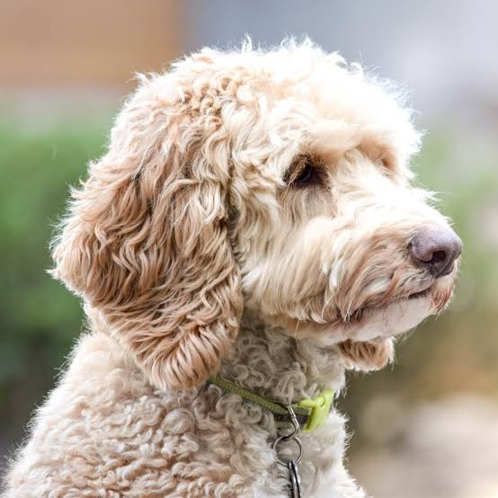

Labradoodle, Suomessa "Finnish labradoodle" ja puhekielessä myös labraduudeli, on labradorinnoutajan ja villakoiran risteytys eli monirotuinen. Labradoodleja on kolmea kokomuunnosta: standard, medium ja mini. Labradoodlejalostuksen alkuperäisenä tavoitteena oli kehittää allergikoille soveltuva avustajakoira.
Euroopassa elävillä labradoodleilla ei ole yhtenäistä standardia, joten ne ovat sekä ulkonäkönsä että luonteensa puolesta yllätyspaketteja. Koira on kooltaan keskikokoinen tai suuri, sillä sen risteyttämiseen käytetään isovillakoiraa ja labradorinnoutajaa. Myöhemmissä sukupolvissa saatetaan käyttää myös pieniä villakoiria, mikä tekee niistä vielä erilaisempia keskenään kuin ensimmäisen sukupolven koirat. Värivaihtoehtoja on paljon: (lähes) kaikki värit ovat mahdollisia kermanvalkoisesta mustaan. Sama koskee myös turkkia: labradoodle voi olla lyhyt- tai pitkäkarvainen, ja sen turkki voi olla karkea, kihara tai sileä. Labradoodlen ihanneulkonäkö on nallekarhumainen. Korkeus: Uros: 25–30 cm, Naaras: 25–30 cm. (Lähde: HANKIKOIRA.FI)